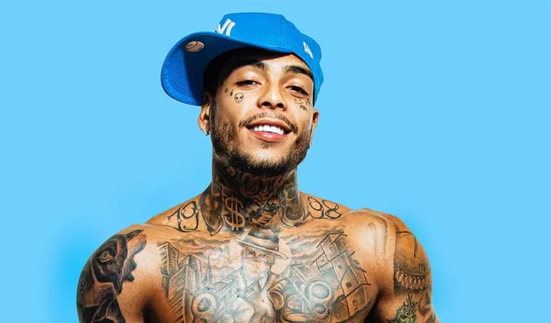

Mc Kevin
Kevin teve uma filha, Soraya, nascida em 2015, fruto de relacionamento com Evelin Gusmão. Em 2020, começou a namorar a advogada criminalista Deolane Bezerra, de quem ficou noivo em 29 de abril de 2021 em Tulum, no México, e foram morar juntos
logo depois em Mogi das Cruzes, na Grande São Paulo.
O histórico judicial do cantor foi bastante conturbado. Uma das primeiras vozes de prisão que o cantor recebeu foi no ano de 2016,
quando foi abordado, tendo sido encontrado um celular que constava como uma aparelho furtado. Na ocasião, sua fiança foi paga e posteriormente liberado
Outra passagem que o cantor teve ocorreu um mês depois, após se envolver em um acidente de trânsito, no qual avançou um sinal vermelho e colidiu com outro carro.
As investigações mostraram que Kevin estava sem habilitação e com 0,48 mg/L de álcool no sangue. Em mais de uma ocasião o cantor foi apreendido com o uso de drogas.
Uma das primeiras ocorreu em São Paulo, onde o cantor estava fumando maconha dentro de seu veículo.
No mesmo ano o cantor foi encontrado utilizando drogas dentro de um hotel em Belo Horizonte. Uma das últimas acusações ocorreu em maio de 2020,
quando o cantor foi acusado de frequentar os espaços de seu apartamento com a COVID-19, propagando a doença contagiosa dentro dos apartamentos.
Após a morte do cantor todas as acusações foram arquivadas.